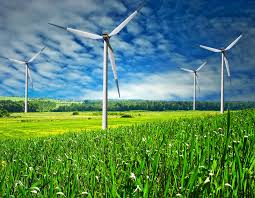

Вітроенергетика
Вітроустановка
Вітер утворюється в результаті нерівномірного нагрівання поверхні Землі Сонцем. Потоки повітря можуть бути використані для приведення в рух вітрових турбін. Принцип дії всіх вітроустановок один: під напором вітру обертається вітроколесо з лопатями, яке передає крутний момент через систему передач валу генератора, що виробляє електроенергію. Реальний ККД найкращих вітрових коліс досягає 45 % у разі стійкої роботи при оптимальній швидкості вітру. Існують дві принципово різні конструкції вітроенергетичних установок: з горизонтальною і вертикальною віссю обертання.
Сучасні вітрові турбіни мають номінальну потужність від, приблизно, 600 кВт до 5 МВт. Найпоширенішими в комерційному застосуванні, наразі, є повітряні турбіни з номінальною потужністю в діапазоні 1,5—3 МВт. Потужність вітрового потоку пропорційна до площі його перерізу і має кубічну залежність від швидкості вітру, тобто його потужність зростає ще швидше, ніж швидкість вітру. Найкращими для розташування вітрових електростанцій є місцевості з потужними та сталими вітрами, такі як прибережні смуги та вершини гір.
Економія витрат
Встановлюючи вітряки ви економите використання дорогого природного газу чи рідкого палива і гарантуєте собі зменшення витрат на експлуатацію системи опалення. Вітер не виставляє рахунки за спожиту енергію!
Екологія і захист довкілля
Встановлюючи вітряки, Ви засвідчуєте свою відповідальність перед майбутніми поколіннями. Ви не тільки зекономите традиційні джерела енергії, а і значно зменшите шкідливі викиди в атмосферу при їх спалюванні та викиди парникових газів. Енергія вітру– абсолютно еклогічно чистий вид енергії!